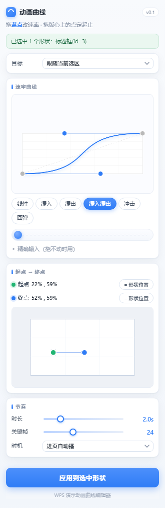
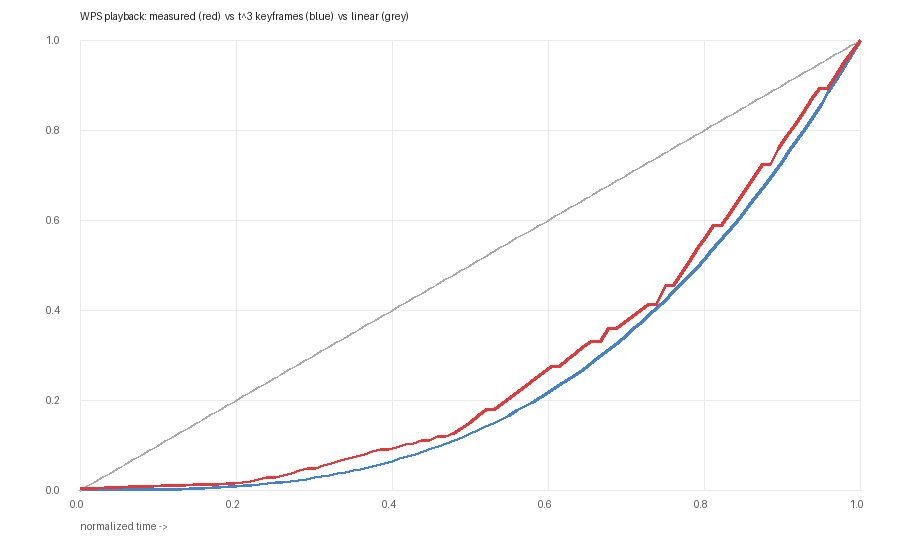

WPS 演示的动画窗格只能拖“平滑开始 / 平滑结束”两个滑块。这个插件补上缺的那一块： 一条可以手动拖控制点的贝塞尔曲线，决定动画的速度节奏。
安装到 WPS →

PPTX 的动画速率存在时间轴的 p:tavLst 关键帧表里。原生界面不给你这个入口，
但 WPS 的 JSAPI 暴露了 PropertyEffect.Points。插件把贝塞尔曲线采样成
20~40 个关键帧写进去，播放时就按你的曲线走。
位置、尺寸、旋转、不透明度、填充色这类属性动画，可以任意曲线，包括回弹。 支持「移出」和「移入」（入场）两种方式。
飞入、擦除、百叶窗这类原生特效，模型里只有两个百分比，做不出真曲线。
Windows / Linux 版 WPS 演示。个人版需 ≥ 12.1.0.16910，且只能通过安装页部署（旧的文件配置方式已被官方限制）。 不支持 Mac 版 WPS。